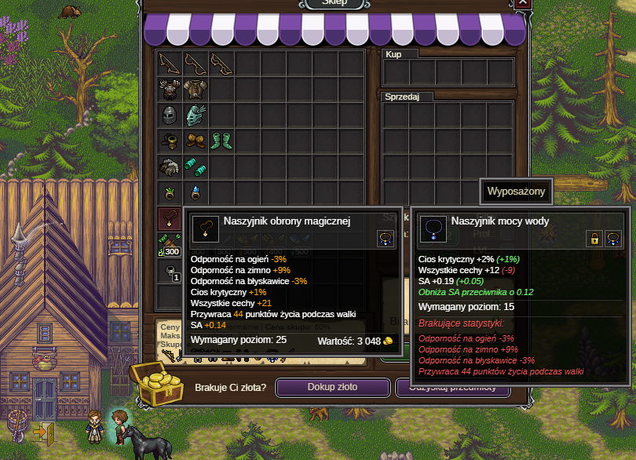

<body>
<h3>25lvl</h3> <br />
<a>Zakładamy broń żywiołów, otwieramy szkatułkę, udajemy się do Ithan oddać ZR</a> <br />
<a>Dostajemy również możliwość rozdania umek. Poczytajcie umiejętności, na start najlepiej wziąć takie, które pasywnie zwiększą wasze obrażenia lub defensywę.</a> <br />
<a>Sprzedajcie itemy u Roana, oraz udajcie się do Huslina i Unila, na pewno mają dla was jakieś lepsze eq do założenia.</a> <br />
 <br />
<a>Tak powinny wygladać wasze torby po sprzedaży.</a> <br />
 <br />
<a>Np taki naszyjnik kupicie u Huslina za grosze.</a> <br />
<a>Następnie udajcie się do zakonu planu astralnego i tepnijcie do Karka-han</a> <br />
</body>